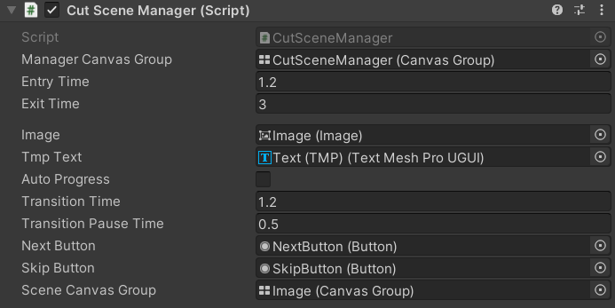

The Cutscene Manager
The CutScene Manager is in charge of loading and displaying cutscenes.
The Cutscene Manager follows a singleton pattern, meaning that only one instance should exist at any point in the game.

Manager Canvas Group- the canvas group for the whole cutscene "screen"Entry Time- the time for the cutscene screen to fade in at the start of the cutsceneExit Time- the time for the cutscene scroon to fade out at the end of the cutsceneImage- the image component showing the picture of the cutsceneTmp Text- the TextMeshPro(TMP) component showing the text of the cutsceneAuto Progress- whether the cutscene should progress according to the timing saved in the CutSceneSequence or only progress when the player clicks the "Next" ButtonTransition Time- the time it takes for a single scene fade in/fade outTransition Pause Time- the time the screen stays at black when fading between one scene to another
Note
The total time for one scene to transition to another is Transition Time + Transition Pause Time + Transition Time
Next Button- the button that triggers the next scene to be displayedSkip Button- the button that ends the cutscene sequence prematurelyScene Canvas Group- the canvas group for the cutscene only (as opposed to the whole cutscene screen), consisting of the image and tmp components